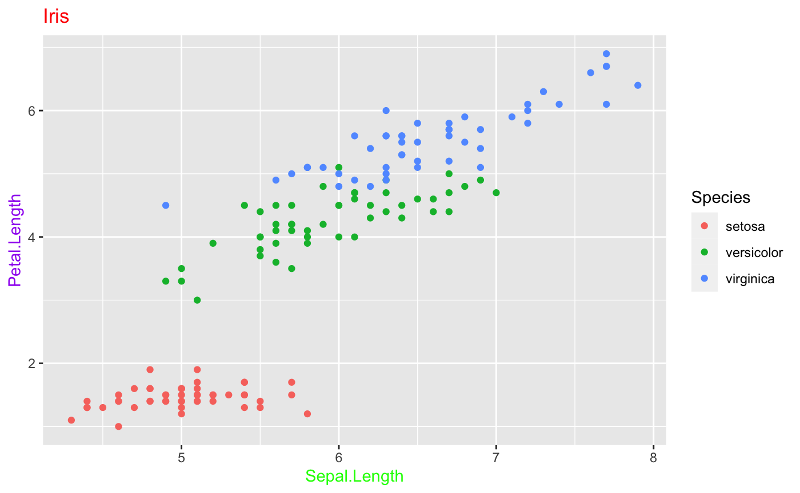

Colors
Here is an example of how you can formulate queries related to theme-related colors using gg_-commands:
ggplot(data=iris,
mapping=aes(x=Sepal.Length,
y=Petal.Length, color=Species))+
ggtitle("Iris")+
geom_point()+
gg_("paint the title red")+
gg_("paint the x-axis label in green")+
gg_("also, I want a purple y-axis label")
Valid Colors
The ggx package matches valid base R colors. The list of all valid colors, such as those:
head(colors(), n=20)
#> [1] "white" "aliceblue" "antiquewhite" "antiquewhite1"
#> [5] "antiquewhite2" "antiquewhite3" "antiquewhite4" "aquamarine"
#> [9] "aquamarine1" "aquamarine2" "aquamarine3" "aquamarine4"
#> [13] "azure" "azure1" "azure2" "azure3"
#> [17] "azure4" "beige" "bisque" "bisque1"